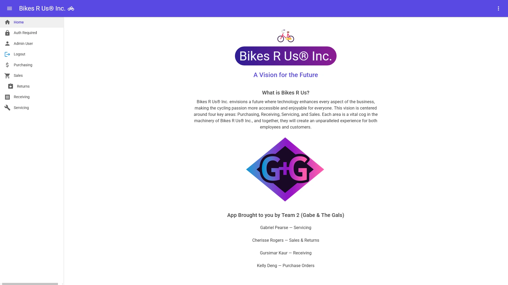
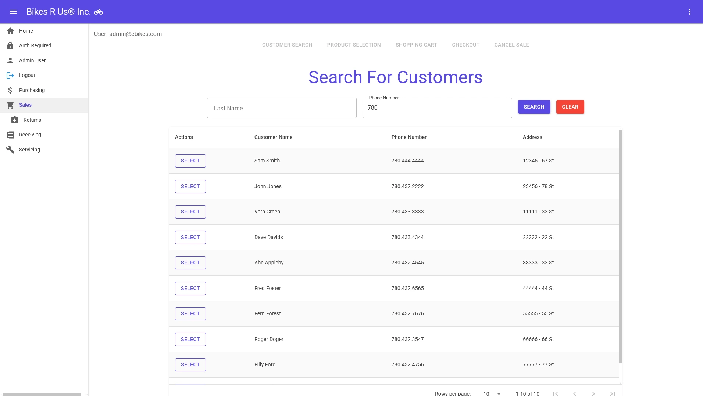
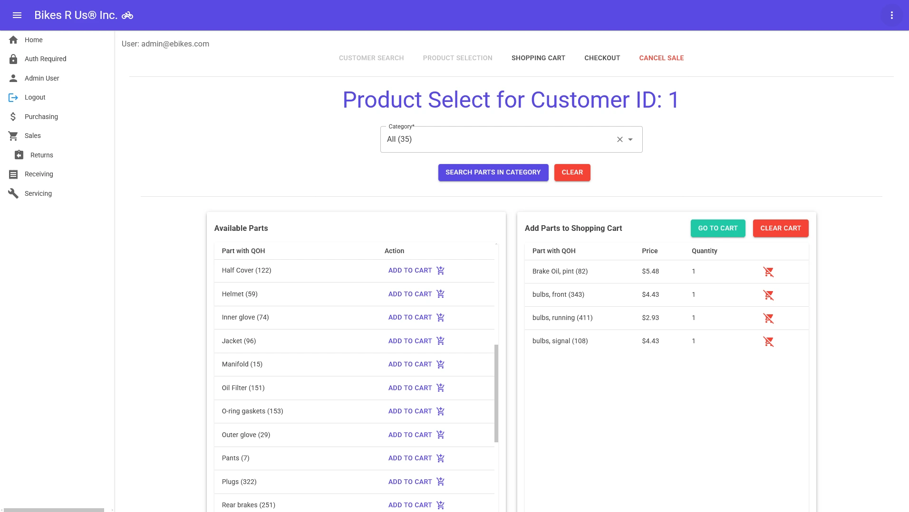
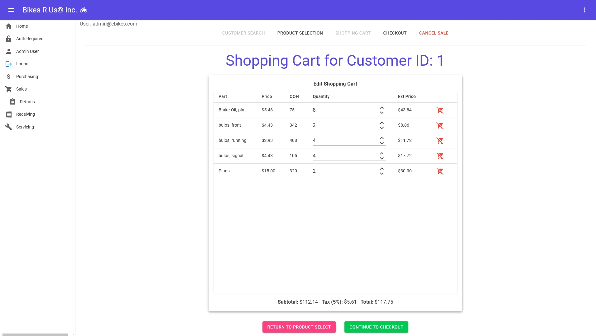
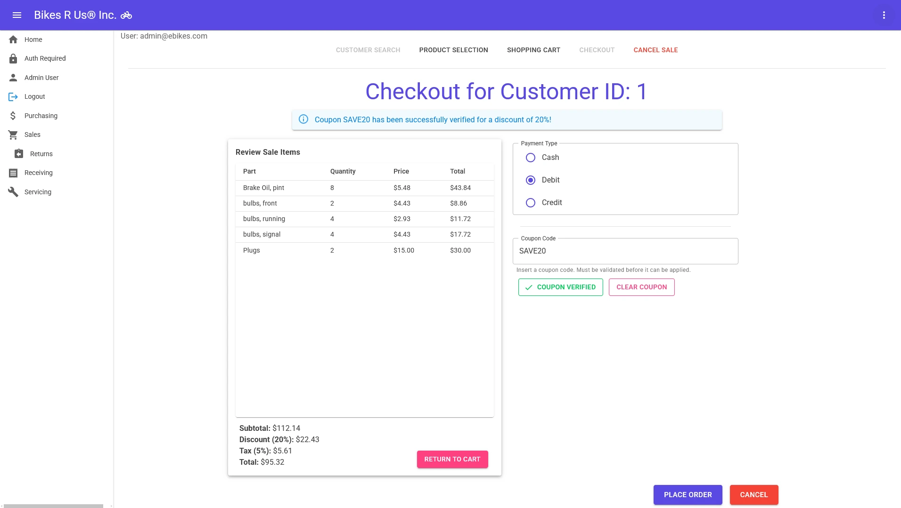

BikesRUs App Project
Tech Stack
A group project for an App Dev class focused on Online Transaction Processing. I was responsible for Sales and Returns, which required writing database (LINQ) queries, reverse engineering the database into the system, and finally, using these queries for data display on the front end and allowing authorized users to alter data. I also created the front page and logo for the team.
I made the following pages for this project:
- Customer Search - allows user to search (query database) for a customer using their last name or phone number
- Product Select - allows user to query products filtered by categories, and add or remove these products to/from the shopping cart
- Shopping Cart - allows user to adjust product quantity and view totals, including tax
- Checkout - allows user to choose payment type and apply coupon codes for discounts. "Place Order" button adds the sale to the database
- Returns - allows user to search for a Sale ID number and process a return, taking previous returns into account
This project gave me experience with:
- Creating Blazor Pages
- Creating the BLL, DAL, Entities and View Models
- Frontend and Backend Data Validation
- Writing LINQ Queries and Data Retrieval
- Implementing Authentication/Authorization
- Saving Data Using OLTP




